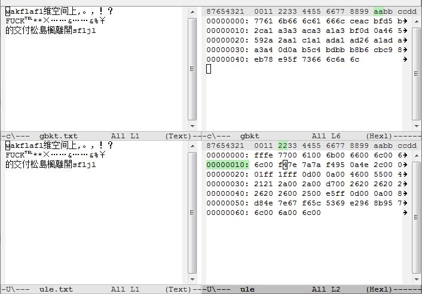

前言
最近在做MTK开发，需要在程序中将GBK编码的文本文件实时转换为unicode编码，因为MTK只认Unicode。经尝试网上提供的mmi_chset_convert函数在我手上的SDK里没有用，很奇怪这个函数的只是调用了memcpy。无奈之下只能自己动手实现转换，也好趁这个机会摸清以前一直一知半解的字符编码。
说到字符编码，第一误解就是字符集（character set）和字符编码（character encoding）的混淆。以前经常把所有名词都当成字符编码(encoding)，比如我就把GB2312叫成编码，实际上GB2312应该是字符集， 而它用的编码方式应该叫做EUC-CN。对于字符集跟字符编码的区别还是很难理解的（可看维基百科这里、这里跟这里），我也模糊，再说下我的理解，比如说思密达们用的字符集是KS X 1001，而他们的编码方式也是EUC，不过是叫做EUC-KR。关于EUC编码方式，实际上就是对于ASCII字符用一个字节（8bit）表示，高位(第一位)为0来表示它是 ASCII字符，而其他字符用两个字节表示（16bit），且每个字节加上0xA0(16进制)，也就将它们的高位置为1，以跟ASCII字符区分开来（后面在我的程序里就可以看到这个应用）。关于这个问题可再参考Blogjava上的两篇系列文章，[1]、[2]。
当然如今把GB2312等同于编码了也不会有任何问题了。Html文档头经常出现的 charset=utf-8 对此贡献不少，这里的charset应该是指encoding，再比如说charset=gb2312实际上指的就是「EUC-CN」（强调一下utf-8、iso-8859-1都是字符编码，unicode才是字符集）。所以关于标题《从GBK到Unicode的中文字符映射》，实际上应该叫做《GBK到UTF-16（UCS2）的中文字符映射》，
GBK
GBK即汉字内码扩展规范，是「国家标准扩展」三个词的拼音缩写。具体可参考维基百科。
GBK既是字符集也是字符编码(够讨厌的吧…)[2]。不过这不重要，解决问题的关键是摸清GBK的编码方式，才能找到GBK到Unicode的映射规律。在此贴下维基百科上的图片：


由上表可见，GBK编码主要将字符分为五个区域。
其中GBK/1、GBK/2就是GB2312的字符集，其编码跟GB2312的编码是一致的，所以说GBK是向下兼容GB2312。GBK/3、GBK4就是GBK新增的汉字，许多繁体字、偏僻字都集中在此。但GBK/4中并不是全都是汉字，或者是不存在Unicode字符集中的汉字，经我统计实际上只有8059个汉字是在Unicode中存在的。剩下的GBK/5跟GBK/1一样存放都是特殊符号。
Unicode
前面提到Unicode是字符集，常用的编码是UTF-8和UTF-16，还有另一种叫UTF-32，因为UTF-32每个字符都要占用4个字节不大实用所以比较少见。UTF-8、UTF-16则都是变长编码，我要实现的实际就是GBK到UTF-16的转换。UTF-16的好处是在0x0到0xFFFF这个区域，也就是说字符编码小于65535的都用2个字节表示，不过因此UTF-16不兼容于ASCII。在此区域UTF-16就等同于UCS-2，所以说UCS-2是UTF-16的子集。GBK中的字符都是属于这个区域，所以这里提到的UTF-16也就是等同于UCS-2（维基百科也将UCS-2重定向到 UTF-16）。[4]
UTF-16还有个历史问题，就是字节序问题，也就是传说中的大尾、小尾问题，比如说‘A’的ASCII码是0x41，那么其对应的UTF-16编码是0x0041还是0x4100呢?这个区别就是字节序问题。传说Windows用的就是0x4100即小尾序，苹果的Mac有个性地用0x0041表示，即是大尾序。其他字符也要这样区分，比如汉字‘朱’小尾序表示是0x3167，大尾序表示是0x6731。因为UTF-16有字节序问题，为了区分一般文本编辑器都会在UTF-16编码的文档前面加上0xFFFE（小尾序）或）0xFEFF(大尾序)来区分，这个标记称为BOM，即字节序标记（Byte Order Mark）。[5]
转换代码
知道了这些基础，接下来就可以开始转换了。由于GBK到Unicode的汉字没有直接的映射关系，传说GBK是按拼音排序，Unicode是按部首排序的。所以要转换之前必须得有个对照表，一开始我就在网上找到这张表(附录1)，表的结构如下所示。

从上表比较相同汉字的 unicode编码跟gbk编码确实看不出有什么规律。区位码是GB2312的特色，也可以说EUC的特色。注意上表的区位码是十进制的，比如汉字‘一’区位码5027，将50转换为16进制得0x32，加上0xa0得0xd2；同样的27+0xa0 = 0x1b+0xa0=0xbb。
该表总共20902个汉字，Unicode范围从0x4e00到0x9fa5。整张表占用空间2.73Mb，是xlt格式的缘故。考虑到我只需做GBK到 UTF-16的单向转换，要对表做一些处理，实际上只需保存unicode编码一项便可，为了让unicode编码方便用gbk编码索引，我先将编码按 GBK的各个范围分段排列，不包括特殊符号只有三个段，分别对应GBK/1、GBK/2、GBK/3。在段内则按编码的数值大小排列。比如表的第一位是 ‘啊’，是GBK/1的第一个字符，而它的UTF-16编码是0x554a。这样出来的结果是这样的：
{kind=link}
我还在表头添加了BOM以便文本编辑器能够识别，在这里用的是小尾序，所以添加的便是0xFFFE。整张表大小40.8KB((20902+1)*2 = 41806 byte)。这样在移动设备中也可以全部读取到内存中。写到这里代码也呼之欲出了。
typedef int S32;
typedef char S8;
static S8 ULE[(20902 + 1) * 2 + (1040) * 2]; //Unicode Little-Endian 表，读取自上文所生成的文件。 总共20902个汉字 1040个特殊符号
const static S32 GBK2_OFFSET = 2; //GBK/2的偏移地址,头两个字符是BOM(0xFFFE)
const static S32 GBK3_OFFSET = GBK2_OFFSET + 6763 * 2; //GBK/3的偏移地址,GBK/2有6763个字符
const static S32 GBK4_OFFSET = GBK3_OFFSET + 6080 * 2; //GBK/4的偏移地址,GBK/3有6080个字符
const static S32 GBK1_OFFSET = 41806; // GBK/4即gb2312的符号的偏移地址
const static S32 GBK5_OFFSET = 41806 + 846 * 2; // GBK5符号的偏移地址
/**
* dest 输出的UTF-16(UCS-2)编码字符。
* src_size
* src GBK编码的字符
*
**/
S32 gbk_to_ule(S8* dest, S32 src_size, S8* src) {
S32 h, l; //h 高位字节 l 低位字节
S32 i; //dest的索引
S32 j; //src的索引
S32 seek; //
for (i = 0, j = 0; j < src_size; i += 2) {
h = src[j++] & 0xff; //读取一个字节
if ((h & 0x80) == 0) { // 高位为0 是Ascii 码
l = 0x0;
} else {
l = src[j++] & 0xff; // 高位为1 为gbk字符集字符,读取下一个字节
//将gbk编码映射到ULE表中的位置
if (h >= 0xB0 && h <= 0xF7 && l >= 0xA1 && l <= 0xFE) { //GBK/2的编码范围 ,实际上GBK2高字节包含在GBK/4的范围内,只是低字节的范围不同
//GBK/2实际就是GB2312,GB2312是区位码,16-87区为汉字编码区，每区有94个字符
seek = GBK2_OFFSET + ((h -16 - 0xA0) * 94 + (l -1 - 0xA0)) * 2;//GBK2偏移+区位偏移+区内码数偏移为该GBK字符对应的unicode编码位置.
h = ULE[seek];
l = ULE[seek + 1];
} else if (h >= 0x81 && h <= 0xA0 && l >= 0x40 && l <= 0xFE) { //GBK/3的编码范围
seek = GBK3_OFFSET + ((h - 0x81) * 190 + (l - 0x40)
- (l > 0x7F ? 1 : 0)) * 2;//GBK3偏移+区位偏移+区内码数偏移因为低位字节0x7F处不编码,所以大于0x7F要-1已更正位置. 190=0xFE - 0x40+1-1 低字节 0x0-0x39 与 0x7F,0xFF 不放 总共空出66个字节
h = ULE[seek];
l = ULE[seek + 1];
} else if (h >= 0xAA && h <= 0xFE && l >= 0x40 && l <= 0xA0) { //GBK/4的编码范围
seek = GBK4_OFFSET + ((h - 0xAA) * 96 + (l - 0x40)
- (l > 0x7F ? 1 : 0)) * 2;//除了低位字符范围不同外,GBK4与GBK3大致相同
h = ULE[seek];
l = ULE[seek + 1];
}
//后来再添加的对GBK/1、GBK/2也就是GBK符号的支持.
else if (h >= 0xA1 && h <= 0xA9 && l >= 0xA1 && l <= 0xFE) {
seek = GBK1_OFFSET + ((h - 0xA1) * 94 + (l - 0xA1)) * 2;
h = ULE[seek];
l = ULE[seek + 1];
} else if (h >= 0xA8 && h <= 0xA9 && l >= 0x40 && l <= 0xA0) {
seek = GBK5_OFFSET + ((h - 0xA8) * 96 + (l - 0x40)- (l > 0x7F ? 1 : 0)) * 2;
h = ULE[seek];
l = ULE[seek + 1];
}
}
dest[i] = h;
dest[i + 1] = l;
}
//wchar 宽字符字符串的结束标记
dest[i] = 'placeholderfor0code';
dest[i + 1] = 'placeholderfor0code';
return i;
}
基于这个函数我实现了一个命令行程序gbktoule，来将GBK编码的文件转换为UTF-16 LE 编码的文件。当然这个程序主要是用来测试的，不支持批量转换。
使用时，可以在控制台键入 gbktoule file1 file2 来将GBK文件file1的字符转换到UTF-16的文件file2中。
如 键入gbktoule gbkt.txt ule.txt。结果如下图所示：
 It work!
{kind=link}
程序下载点此，其实符号索引是后来才生成。以便能够完整的转换GBK文档，但是GBK/4缺少的那101个字符还是让我觉得很诡异。可在附录找到全部GBK符号。
参考阅读
- Java 中的字符集编码入门（二）编码字符集与字符集编码的区别
- Java 中的字符集编码入门（三）GB2312，GBK与中文网页
- Charset vs. Encoding
- http://zh.wikipedia.org/zh-cn/UCS-2
- 字符集编码的文本文件头标识
附录
- 汉字编码对照表.xls
- 源码、编译的可执行文件、及ULE表都在这里
- GBK/1、GBK/5符号集合，当然在我网页上显示的是UTF-8编码的：